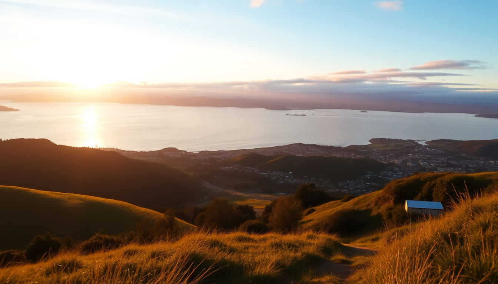

Best Day Trips from Auckland: Hobbiton, Rotorua & Waitomo

We based ourselves in Auckland for a week, and honestly, the city itself only needed two days. The real payoff was using it as a launchpad for three iconic day trips: Hobbiton, Rotorua, and Waitomo. Each is doable in a long day from Auckland—but you need to know the logistics. Here’s exactly how we did it, what we’d change, and where we actually spent money.
How do you get to Hobbiton from Auckland?
Driving yourself is the most flexible option. It’s a straight shot down State Highway 1 to State Highway 29, then onto Buckland Road. The whole trip takes about 2 hours and 15 minutes from central Auckland, parking is free at the Hobbiton Movie Set visitor centre.
If you don’t want to drive, GreatSights and Cheeky Kiwi Travel run daily coach tours that include round-trip transport and the guided tour ticket. We drove, and I’m glad we did—it let us stop for lunch at The Shire’s Rest Café (the lamb pie was decent, not great) and take our time on the drive back through Matamata town.
One thing the glossy brochures don’t tell you: the tour is tightly paced. You’re herded in groups of about 15, and the guide keeps you moving. You get about 10 minutes at the Green Dragon Inn for a complimentary ginger beer or cider, then it’s back on the bus. If you want photos without 50 strangers in the frame, hang at the back of your group.
Key stops on the Hobbiton route:
- Hobbiton Movie Set – the actual set, with 44 hobbit holes and the Party Tree
- The Shire’s Rest Café – pre-tour coffee and pies
- Green Dragon Inn – included drink stop mid-tour
- Matamata i-SITE – good for last-minute tickets or toilet break before you arrive
Is a day trip to Rotorua from Auckland worth it?
Yes, but it’s a long day. It’s 3 hours each way (230 km) via State Highway 1 and State Highway 5. We left Auckland at 6:30 AM and got back just before 9 PM. That gave us enough time for two main activities and a proper lunch.
We spent the morning at Te Puia – the geothermal valley and Māori cultural centre. The guided tour walks you past the Pōhutu Geyser (erupts 10–20 times a day) and the Kiwi House where you can actually see a kiwi in near-darkness. It’s not a zoo exhibit; it’s a dim, quiet room with a glass wall. We saw one shuffling around for about 90 seconds.
Lunch was at Eat Streat – the pedestrianised food lane in central Rotorua. We grabbed fish and chips from The Fat Dog Café; it was fine, nothing special, but the outdoor seating is lively.
Afternoon we hit Wai-O-Tapu Thermal Wonderland – 30 minutes south of Rotorua. The Champagne Pool is the main draw, and it looks exactly like the photos: bright orange and green edges, steaming turquoise water. The full loop takes about 90 minutes. Wear shoes you don’t mind getting dusty; the sulphur smell is real, but you get used to it after 10 minutes.
Must-see stops in Rotorua:
- Te Puia – geyser, kiwi house, Māori carving school
- Wai-O-Tapu Thermal Wonderland – Champagne Pool, Devil’s Bath, Lady Knox Geyser (erupts daily at 10:15 AM)
- Eat Streat – cluster of restaurants and bars on Tutanekai Street
- Polynesian Spa – if you have time, book a lakeside mineral pool; we skipped it due to time
Can you combine Waitomo and Hobbiton in one day?
Yes, and we did exactly that. It’s the most efficient day trip from Auckland if you’re short on time. The two sites are only 45 minutes apart by car. We booked a 10:30 AM tour at Waitomo Glowworm Caves and a 2:30 PM tour at Hobbiton.
The Waitomo tour is short – about 45 minutes. You walk through limestone chambers, then board a small boat for the silent float through the glowworm grotto. No photos allowed on the boat, which is annoying but enforced. The glowworms look like a starry sky on the cave ceiling. It’s genuinely cool, not a letdown.
We drove straight to Hobbiton after, grabbed a quick coffee at The Shire’s Rest, and joined the afternoon group. Timing was tight but doable. If you’re not driving, Gray Line and Awesome NZ run combo tours that handle both in one day. They cost more (around $280 NZD per person) but remove all the stress.
What to know for a combo day:
- Waitomo Glowworm Caves – book the earliest tour (8:30 or 9:00 AM) to leave time for Hobbiton
- Ruakuri Cave – a longer, more adventurous option with walking tracks and a spiral entrance; skip if you’re doing Hobbiton same day
- Waitomo Homestead – decent café for a quick breakfast before your cave tour
- Hobbiton Movie Set – afternoon light is better for photos than morning
What’s the best way to book tours for these day trips?
We booked everything direct, not through a third-party aggregator. For Hobbiton, we used hobbitontours.com – same price as anywhere, but you get direct cancellation support. For Waitomo, we booked through waitomo.com. For Rotorua, we bought Te Puia tickets on their own site and Wai-O-Tapu tickets at the gate (they take cards).
If you want a guided coach tour that includes transport, GreatSights is the most reliable operator. They have a dedicated Hobbiton tour and a Rotorua tour. Cheeky Kiwi Travel is smaller and more personal – max 20 people per bus. Gray Line runs the combo tours.
Booking tips:
- Hobbiton – tickets sell out 2–3 weeks ahead in peak season (Dec–Feb); book early
- Waitomo Glowworm Caves – same-day tickets are usually available, but morning slots go first
- Te Puia – book online for a 10% discount over walk-up prices
- Wai-O-Tapu – no online discount, but you can skip the queue by buying at the gate before 10 AM
Where should we stay in Auckland for easy day-trip access?
We stayed at The Hotel Britomart in the Britomart precinct. It’s a 5-minute walk to Britomart Transport Centre, where the Northern Explorer train departs (though we drove). More importantly, it’s right next to the Auckland Harbour Bridge on-ramp, so getting onto State Highway 1 takes under 5 minutes.
If you’re on a budget, The Surrey Hotel on Grafton Road is a solid mid-range option. It’s a 10-minute Uber to the highway, and rooms are basic but clean. For a central location near restaurants, SkyCity Grand Hotel puts you right on Federal Street, a short walk to Depot Eatery (try the snapper sliders) and The White Lady food truck for late-night burgers.
Neighbourhoods to consider:
- Britomart – best for highway access and modern hotels
- Viaduct Harbour – waterfront dining, but pricier and slightly slower to get on the motorway
- Ponsonby – great cafés and boutique stays, but you’ll deal with inner-city traffic in the morning
FAQ
How far is Hobbiton from Auckland? It’s about 170 km south, roughly 2 hours and 15 minutes by car. The drive is straightforward on State Highway 1 and State Highway 29, with the last 10 km on rural roads. No tolls on this route.
Can you do Waitomo and Rotorua in the same day from Auckland? Technically yes, but we don’t recommend it. The drive from Waitomo to Rotorua is 1.5 hours, and Rotorua to Auckland is 3 hours. You’d spend 7+ hours driving and only get a few hours at each site. Better to pick one, or do the Hobbiton-Waitomo combo.
Is the Hobbiton tour worth the money? If you’re a Lord of the Rings fan, yes. If you’re not, it’s still a well-run tour with impressive set design and a free drink. At $89 NZD per adult (as of 2025), it’s not cheap, but the guides are knowledgeable and the pace is efficient. We thought it was worth it.
Conclusion
- Hobbiton is best as a standalone half-day or combined with Waitomo; afternoon light is ideal for photos
- Rotorua needs a full day – pick Te Puia and Wai-O-Tapu, skip the Polynesian Spa unless you have extra time
- Waitomo is quick (45 minutes) and pairs perfectly with Hobbiton on a combo day
- Drive yourself if you want flexibility; book coach tours if you don’t want to navigate
- Stay in Britomart or Viaduct Harbour for the fastest highway access out of Auckland